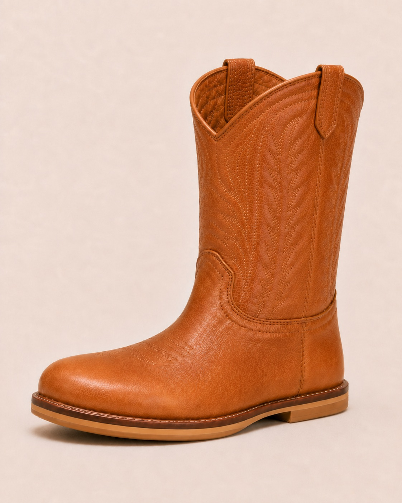
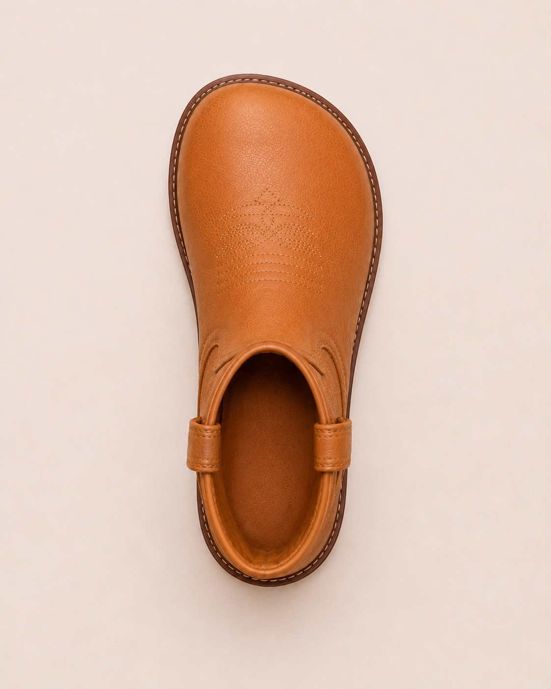

Founding batch · opening soon
A kids’ western boot with a natural toe shape, a level (near‑zero‑drop) footbed, and a secure fit — the boot look you want, built for the foot your kid actually has.

What’s different
Narrow, pointed toes. A raised heel. Stiff soles. We kept everything that makes a boot a boot — and fixed the parts that fight a child’s foot.

Broad and anatomical, so toes spread and sit naturally — no pointed taper crushing them inward.
Near‑zero drop, so your child stands flat. The western heel is shaped into the sole, not stacked under the foot.
A discreet side zip holds the heel and makes them easy to get on — no wrestling, no slipping.
Premium leather‑forward construction in warm caramel. A boot that dresses up or down and holds up to play.
Not a costume. Not a soft‑sole bootie. A real cowboy boot — built like the grown‑up ones, shaped like a kid’s foot.
The founding batch
We’re making a small first run in sizes 8C–12C. Join the list and you’ll see the first real sample photos, lock the founding price of about $98 (vs. $118 at launch), and help us get the sizing right before we build.
Join the founding batchJoin the list
Takes ten seconds. We’ll email you the first look and your founding‑batch invite.
Check your inbox to confirm — that’s where the first look and your founding price will land.